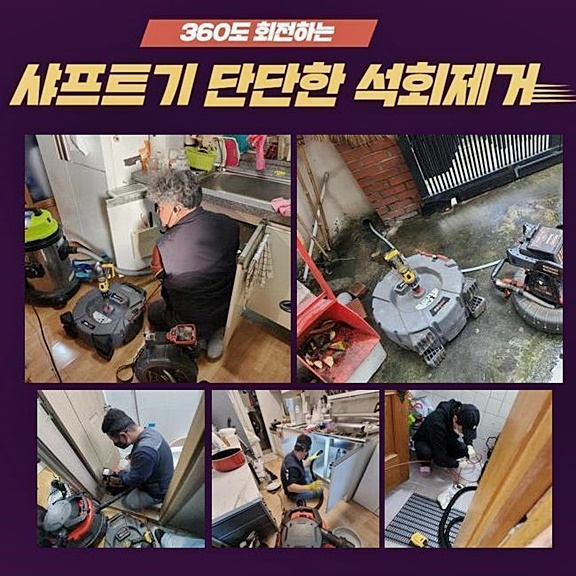
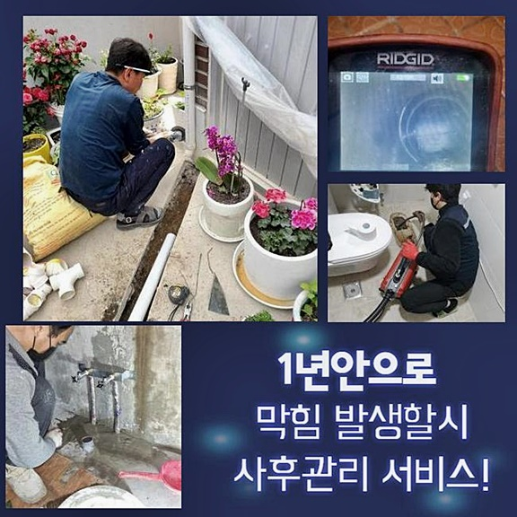
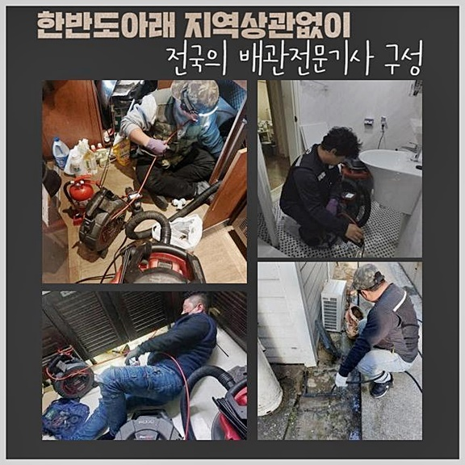
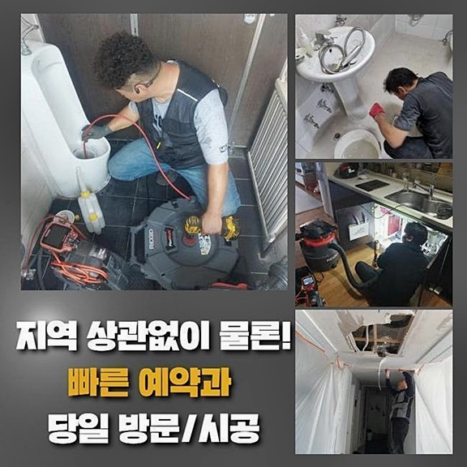
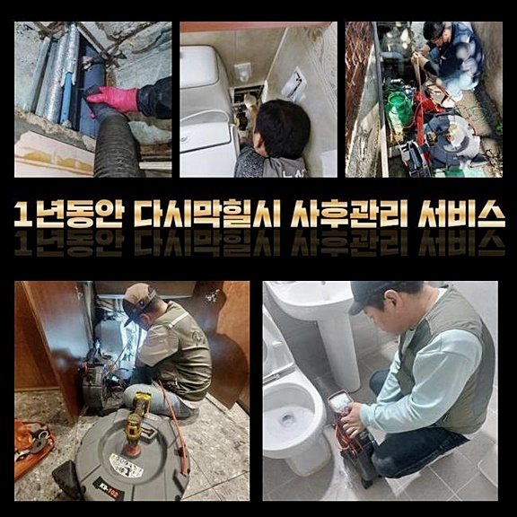

🏠 동작구 동작동대변기뚫음 대방동 배관내시경카메라 배관막힘누수업체
용인시 처인구 배관막힘 전문 시공 후기

📋 작업 개요
- 위치: 용인시 처인구, 수원시 영통구, 화성시 동탄
- 서비스 유형: 배관막힘, 누수수리, 고압세척, 내시경점검
- 작업 일시:
- 업체명: 하수구수사대 (010-5615-2118)
🔍 문제 상황
동작구 동작동대변기뚫음 대방동 배관내시경카메라 배관막힘누수업체
배관에서 생겨난 냄새의 경우 여러 사람들이 마주하는 불편사항이에요
냄새들의 원인으로는 관로들의 문제에요 하수관로에 이물이 쌓이면서 배수를 막게하고 마침내 잔해물이 굳어가며 올라오는 것입니다
냄새들을 제거시키고자 한다면 쌓이게되어 오염되어버린 잔여물질들을 말끔하게 없애주어야 하겠습니다
하지만 생활적인 측면에서 이와같은 사실들을 모르시는 까닭에 자가적인 대책을 실시해보지만 문제들을 완화시키는데 역부족인 사례가 더 많아요
장비의 보유량과 기술력들이 부족할 시 증세들이 발발한 시점에 올바른 방법을 쓰지않으면 관로들이 망가질 확률이 존재하므로 예기치 못하게 불상사를 일으킬 수 있어요
그러므로 오류들이 발생되었다면 전문적인 세척을 받는게 중요하죠
달려간 장소에선 세탁기와 연결된 관로의 문제들로 난감함을 겪고 계셨었는데요

🔎 원인 분석
💡 전문가 진단: 정밀 진단 장비를 사용하여 슬러지의 고착 여부를 판명하고 타격/세척 작업을 실시했습니다.
해당 현장의 배수관은 공동배수관과 각각의 가지배관으로 이어진 형상이였는데 의뢰인분이 설명하시기로는 예상치 못한 장소의 배수구들이 역류되어 의뢰하셨다 하셨죠
정황을 듣고서 가지배관들과 바닥 하수도에서 이어져있는 스팟에서 증세들이 발발한 걸로 판단했어요
공동배수관의 특정 스팟쪽에 증세가 발생하면서 거주공간에서도 고충이 발발한 걸로 보여졌어요
물사용을 하면 반대편 바닥 하수설비 등에서 역류하는 모습으로 고객님 댁에 내방해서 곧장 작업들을 해보아야했는데요
허나 배수관에 이물질들이 많았기에 원활한 수리가 쉽지 않았습니다
우선 석션장치를 써서 하수를 흡입하고 내측으로 조심스럽게 접근해줘야하죠
석션도구를 쓰면 고인 물과 잔해들도 없어지므로 향후의 스케일링도 수월하게 이행될 수 있죠
내시경장치로 확인하니 개별 라인엔 잔해라던지 오염원은 없었고 공용관로로 흘러가는 부위에 기름성분이 쌓인것을 확인했는데요
슬러지는 유수를 막아설만큼 커진 상태였고 냄새들을 풍기는 원인이였습니다

🔧 작업 과정
문제를 해결하고자 하수관의 기름성분을 타격하는 샤프트기기를 써서야 되며, 그리고 엘보라인까지 청소를 이행해 배수장애를 복구시키고 냄새들도 사라지게끔 했어요
거주지 등에서 흔히 볼 수 있는 배수관은 집수시설과 이어진 배관으로 오물들이 한데 모여 빠집니다
일반적으로 잔해물들은 군데군데 축적되게되는 구조입니다
그렇기에 메인관은 때에 맞춰 점검을 실시하는게 좋겠습니다
개별 세대들로 퍼지는 사태를 막으려면 필요하다면 출수구에도 세척작업들이 필요하게 되요
작업하는 도중에 탈락된 잔재들을 석션장비를 써서 꾸준히 흡입해야 추후 과정이 용이하게되고 내시경장치로 관찰할때도 시야확보가 제대로 이뤄지므로 작업 시에는 석션도구의 가용은 반드시 있어야해요
슬러지들이 딱딱해져 관로에 자리잡았다면 이것을 타겟으로 해 작게 하는게 중요하겠습니다
샤프트장치를 통해서 구간별 정체를 해결한 후엔 이물제거가 온전히 진행된건지 확인하고자 하수구 내시경을 통해 점검을 수행합니다
점검과정에선 의뢰자께서도 살펴볼 수 있고 복구된 배수관을 선명하게 확인가능해요
작업 내용을 하나하나 설명하고 세척을 진행하니 고객분도 같이 살피면 좋겠죠?
우리집 관로들이 어째서 막힌건지 어떤 조치들이 괜찮은지 의뢰인분이 명확하게 알고 계시면 관리 시점에도 긍정적일거에요
세척이 끝나면 한꺼번에 수돗물등을 부어주어 배관으로 배출되는지 점검을 수행합니다
이전과달리 역류한다거나 답답한 기색없이 수도가 흘러나가는 걸 보았습니다
고객님으로 하여금 청소된 배수관을 유지하고 관리할 수 있는 팁을 설명하고 종료에 이르렀습니다


✅ 작업 완료
해결에 관해 고민하시기보단 저희업체에게 문의해주신다라면 조속하게 방문드려 진단해드릴게요
현장의 상황들에 발 맞춰 해결방안들을 말씀드려 불편하지 않게끔 이용하실 수 있도록 조치합니다
배수상태에 결함이 생겨 불편들을 마주했다면 부담없이 저희께 연락 주세요
문제의 가정이 쾌적하며 편하게 지내실 수 있도록 도와드릴게요


⚠️ 하수구 배관 막힘 예방 및 관리 가이드
- ✅ 머리카락, 비닐, 물티슈 등 물에 분해되지 않는 이물질은 절대 흘려보내지 마세요.
- ✅ 기름기 많은 식기는 설거지 전 키친타올로 먼저 기름때를 닦아내세요.
- ✅ 주기적으로 배수구에 뜨거운 물을 가득 부어주어 유지방 고착을 방지하세요.
- ✅ 작업 후 1년 이내 재발 시 무상 A/S 보증 서비스를 제공합니다.
💡 핵심 정리
- 확실한 장비 작업(내시경 점검 및 샤프트 스케일링)으로 원인을 뿌리 뽑습니다.
- 작업 후 1년 이내에 동일한 부위 재발 시 100% 무상 A/S 서비스를 보장합니다.
- 서울 · 경기 · 인천 전 지역에 24시간 언제든 긴급 출동할 수 있도록 항시 대기 중입니다.
❓ 자주 묻는 질문 (FAQ)
🚨 용인시 처인구 배관막힘 문제로 고민이신가요?
정확한 원인 진단과 확실한 시공으로 재발 없는 해결을 약속드립니다.
24시간 긴급 출동 | 서울 · 경기 · 인천 전지역 | 1년 내 재발 시 무상 A/S